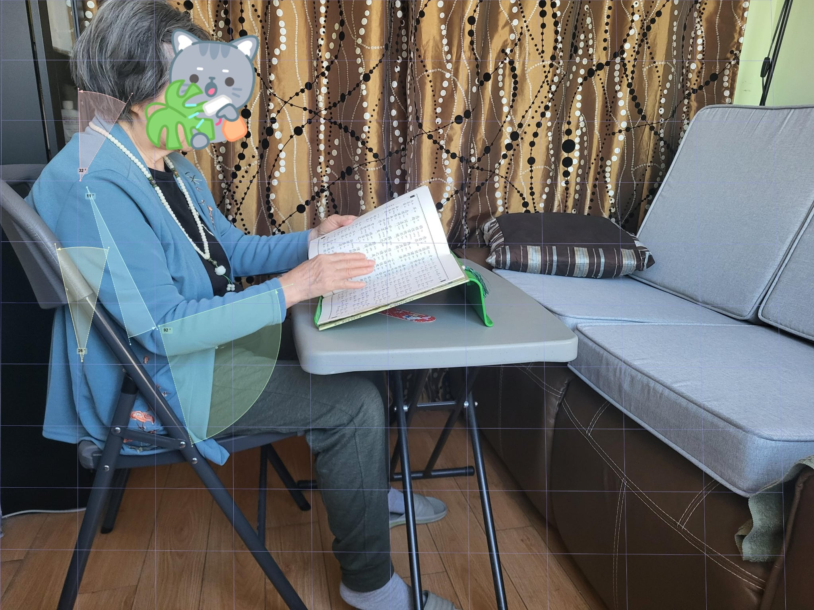
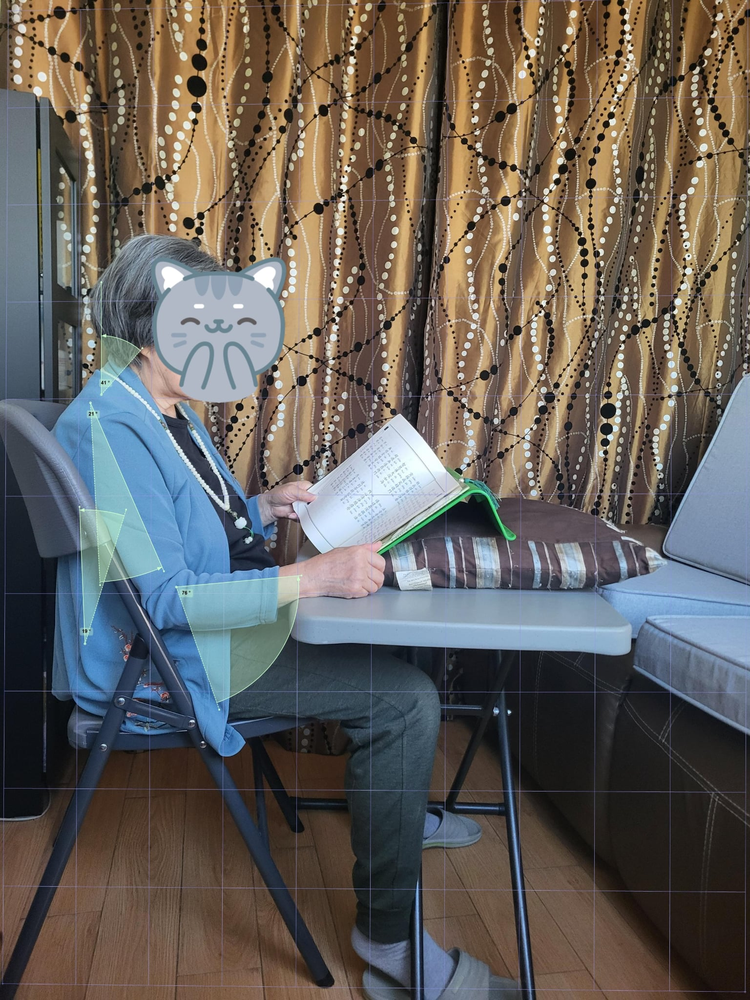
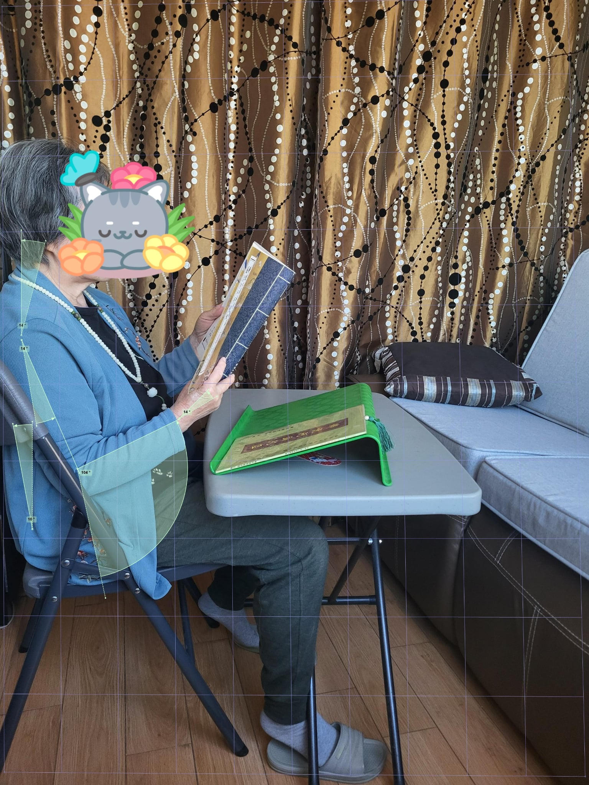

Posture Analysis of Grandmother's Reading Set-Up
Physical Ergonomic Assessment · Posture Analysis · RULA · Kinovea · Usability Improvement
💟 A Personal Project 💟
What this is: This project involved evaluating the physical postural ergonomics of a grandmother's reading set-up, pinpointing certain regions of ergonomic concern and evaluating RULA (Rapid Upper Limb Assessment) scores to compare three different positions and knowing which method works best for physical health and comfort.
Why I wanted to do this: My grandmother left her dedicated book stand at my aunt's place, so she had to adopt a new reading position with the available furniture at her current location. She claims she is comfortable in this new position; however, I wonder if it's truly ergonomic for her long-term health. Consequently, I decided to turn to the standard ergonomic evaluation (RULA for upper limbs) to assess her default position along with a couple of variations that still stay true to a minimalistic yet functional set-up.
From the RULA assessment below, we can see that Position 2 has the lowest risk score. So in the meantime, I will recommend this reading position over the others for grandmother as she waits on her book stand.



